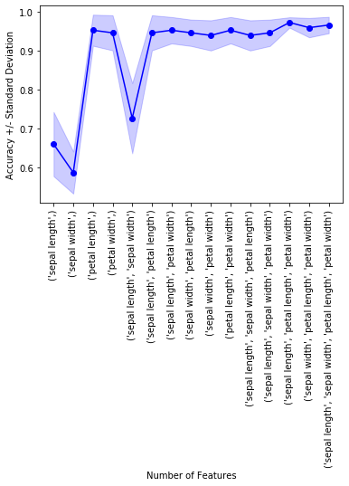

Exhaustive Feature Selector
Implementation of an exhaustive feature selector for sampling and evaluating all possible feature combinations in a specified range.
from mlxtend.feature_selection import ExhaustiveFeatureSelector
Overview
This exhaustive feature selection algorithm is a wrapper approach for brute-force evaluation of feature subsets; the best subset is selected by optimizing a specified performance metric given an arbitrary regressor or classifier. For instance, if the classifier is a logistic regression and the dataset consists of 4 features, the alogorithm will evaluate all 15 feature combinations (if min_features=1 and max_features=4)
- {0}
- {1}
- {2}
- {3}
- {0, 1}
- {0, 2}
- {0, 3}
- {1, 2}
- {1, 3}
- {2, 3}
- {0, 1, 2}
- {0, 1, 3}
- {0, 2, 3}
- {1, 2, 3}
- {0, 1, 2, 3}
and select the one that results in the best performance (e.g., classification accuracy) of the logistic regression classifier.
Example 1 - A simple Iris Example
Initializing a simple classifier from scikit-learn:
from sklearn.neighbors import KNeighborsClassifier
from sklearn.datasets import load_iris
from mlxtend.feature_selection import ExhaustiveFeatureSelector as EFS
iris = load_iris()
X = iris.data
y = iris.target
knn = KNeighborsClassifier(n_neighbors=3)
efs1 = EFS(knn,
min_features=1,
max_features=4,
scoring='accuracy',
print_progress=True,
cv=5)
efs1 = efs1.fit(X, y)
print('Best accuracy score: %.2f' % efs1.best_score_)
print('Best subset (indices):', efs1.best_idx_)
print('Best subset (corresponding names):', efs1.best_feature_names_)
Features: 15/15
Best accuracy score: 0.97
Best subset (indices): (0, 2, 3)
Best subset (corresponding names): ('0', '2', '3')
Note that in the example above, the 'best_feature_names_' are simply a string equivalent of the feature indices. However, we can provide custom feature names to the fit function for this mapping:
feature_names = ('sepal length', 'sepal width', 'petal length', 'petal width')
efs1 = efs1.fit(X, y, custom_feature_names=feature_names)
print('Best subset (corresponding names):', efs1.best_feature_names_)
Features: 15/15
Best subset (corresponding names): ('sepal length', 'petal length', 'petal width')
Via the subsets_ attribute, we can take a look at the selected feature indices at each step:
efs1.subsets_
{0: {'avg_score': 0.65999999999999992,
'cv_scores': array([ 0.53333333, 0.63333333, 0.73333333, 0.76666667, 0.63333333]),
'feature_idx': (0,),
'feature_names': ('sepal length',)},
1: {'avg_score': 0.56666666666666665,
'cv_scores': array([ 0.53333333, 0.63333333, 0.6 , 0.5 , 0.56666667]),
'feature_idx': (1,),
'feature_names': ('sepal width',)},
2: {'avg_score': 0.95333333333333337,
'cv_scores': array([ 0.93333333, 1. , 0.9 , 0.93333333, 1. ]),
'feature_idx': (2,),
'feature_names': ('petal length',)},
3: {'avg_score': 0.94666666666666666,
'cv_scores': array([ 0.96666667, 0.96666667, 0.93333333, 0.86666667, 1. ]),
'feature_idx': (3,),
'feature_names': ('petal width',)},
4: {'avg_score': 0.72666666666666668,
'cv_scores': array([ 0.66666667, 0.8 , 0.63333333, 0.86666667, 0.66666667]),
'feature_idx': (0, 1),
'feature_names': ('sepal length', 'sepal width')},
5: {'avg_score': 0.94666666666666666,
'cv_scores': array([ 0.96666667, 1. , 0.86666667, 0.93333333, 0.96666667]),
'feature_idx': (0, 2),
'feature_names': ('sepal length', 'petal length')},
6: {'avg_score': 0.95333333333333337,
'cv_scores': array([ 0.96666667, 0.96666667, 0.9 , 0.93333333, 1. ]),
'feature_idx': (0, 3),
'feature_names': ('sepal length', 'petal width')},
7: {'avg_score': 0.94666666666666666,
'cv_scores': array([ 0.96666667, 1. , 0.9 , 0.93333333, 0.93333333]),
'feature_idx': (1, 2),
'feature_names': ('sepal width', 'petal length')},
8: {'avg_score': 0.94000000000000006,
'cv_scores': array([ 0.96666667, 0.96666667, 0.86666667, 0.93333333, 0.96666667]),
'feature_idx': (1, 3),
'feature_names': ('sepal width', 'petal width')},
9: {'avg_score': 0.95333333333333337,
'cv_scores': array([ 0.96666667, 0.96666667, 0.9 , 0.93333333, 1. ]),
'feature_idx': (2, 3),
'feature_names': ('petal length', 'petal width')},
10: {'avg_score': 0.94000000000000006,
'cv_scores': array([ 0.96666667, 0.96666667, 0.86666667, 0.93333333, 0.96666667]),
'feature_idx': (0, 1, 2),
'feature_names': ('sepal length', 'sepal width', 'petal length')},
11: {'avg_score': 0.94666666666666666,
'cv_scores': array([ 0.93333333, 0.96666667, 0.9 , 0.93333333, 1. ]),
'feature_idx': (0, 1, 3),
'feature_names': ('sepal length', 'sepal width', 'petal width')},
12: {'avg_score': 0.97333333333333338,
'cv_scores': array([ 0.96666667, 0.96666667, 0.96666667, 0.96666667, 1. ]),
'feature_idx': (0, 2, 3),
'feature_names': ('sepal length', 'petal length', 'petal width')},
13: {'avg_score': 0.95999999999999996,
'cv_scores': array([ 0.96666667, 0.96666667, 0.93333333, 0.93333333, 1. ]),
'feature_idx': (1, 2, 3),
'feature_names': ('sepal width', 'petal length', 'petal width')},
14: {'avg_score': 0.96666666666666679,
'cv_scores': array([ 0.96666667, 0.96666667, 0.93333333, 0.96666667, 1. ]),
'feature_idx': (0, 1, 2, 3),
'feature_names': ('sepal length',
'sepal width',
'petal length',
'petal width')}}
Example 2 - Visualizing the feature selection results
For our convenience, we can visualize the output from the feature selection in a pandas DataFrame format using the get_metric_dict method of the ExhaustiveFeatureSelector object. The columns std_dev and std_err represent the standard deviation and standard errors of the cross-validation scores, respectively.
Below, we see the DataFrame of the Sequential Forward Selector from Example 2:
import pandas as pd
iris = load_iris()
X = iris.data
y = iris.target
knn = KNeighborsClassifier(n_neighbors=3)
efs1 = EFS(knn,
min_features=1,
max_features=4,
scoring='accuracy',
print_progress=True,
cv=5)
feature_names = ('sepal length', 'sepal width',
'petal length', 'petal width')
efs1 = efs1.fit(X, y, custom_feature_names=feature_names)
df = pd.DataFrame.from_dict(efs1.get_metric_dict()).T
df.sort_values('avg_score', inplace=True, ascending=False)
df
Features: 15/15
| avg_score | ci_bound | cv_scores | feature_idx | feature_names | std_dev | std_err | |
|---|---|---|---|---|---|---|---|
| 12 | 0.973333 | 0.0171372 | [0.966666666667, 0.966666666667, 0.96666666666... | (0, 2, 3) | (sepal length, petal length, petal width) | 0.0133333 | 0.00666667 |
| 14 | 0.966667 | 0.0270963 | [0.966666666667, 0.966666666667, 0.93333333333... | (0, 1, 2, 3) | (sepal length, sepal width, petal length, peta... | 0.0210819 | 0.0105409 |
| 13 | 0.96 | 0.0320608 | [0.966666666667, 0.966666666667, 0.93333333333... | (1, 2, 3) | (sepal width, petal length, petal width) | 0.0249444 | 0.0124722 |
| 2 | 0.953333 | 0.0514116 | [0.933333333333, 1.0, 0.9, 0.933333333333, 1.0] | (2,) | (petal length,) | 0.04 | 0.02 |
| 6 | 0.953333 | 0.0436915 | [0.966666666667, 0.966666666667, 0.9, 0.933333... | (0, 3) | (sepal length, petal width) | 0.0339935 | 0.0169967 |
| 9 | 0.953333 | 0.0436915 | [0.966666666667, 0.966666666667, 0.9, 0.933333... | (2, 3) | (petal length, petal width) | 0.0339935 | 0.0169967 |
| 3 | 0.946667 | 0.0581151 | [0.966666666667, 0.966666666667, 0.93333333333... | (3,) | (petal width,) | 0.0452155 | 0.0226078 |
| 5 | 0.946667 | 0.0581151 | [0.966666666667, 1.0, 0.866666666667, 0.933333... | (0, 2) | (sepal length, petal length) | 0.0452155 | 0.0226078 |
| 7 | 0.946667 | 0.0436915 | [0.966666666667, 1.0, 0.9, 0.933333333333, 0.9... | (1, 2) | (sepal width, petal length) | 0.0339935 | 0.0169967 |
| 11 | 0.946667 | 0.0436915 | [0.933333333333, 0.966666666667, 0.9, 0.933333... | (0, 1, 3) | (sepal length, sepal width, petal width) | 0.0339935 | 0.0169967 |
| 8 | 0.94 | 0.0499631 | [0.966666666667, 0.966666666667, 0.86666666666... | (1, 3) | (sepal width, petal width) | 0.038873 | 0.0194365 |
| 10 | 0.94 | 0.0499631 | [0.966666666667, 0.966666666667, 0.86666666666... | (0, 1, 2) | (sepal length, sepal width, petal length) | 0.038873 | 0.0194365 |
| 4 | 0.726667 | 0.11623 | [0.666666666667, 0.8, 0.633333333333, 0.866666... | (0, 1) | (sepal length, sepal width) | 0.0904311 | 0.0452155 |
| 0 | 0.66 | 0.106334 | [0.533333333333, 0.633333333333, 0.73333333333... | (0,) | (sepal length,) | 0.0827312 | 0.0413656 |
| 1 | 0.566667 | 0.0605892 | [0.533333333333, 0.633333333333, 0.6, 0.5, 0.5... | (1,) | (sepal width,) | 0.0471405 | 0.0235702 |
import matplotlib.pyplot as plt
metric_dict = efs1.get_metric_dict()
fig = plt.figure()
k_feat = sorted(metric_dict.keys())
avg = [metric_dict[k]['avg_score'] for k in k_feat]
upper, lower = [], []
for k in k_feat:
upper.append(metric_dict[k]['avg_score'] +
metric_dict[k]['std_dev'])
lower.append(metric_dict[k]['avg_score'] -
metric_dict[k]['std_dev'])
plt.fill_between(k_feat,
upper,
lower,
alpha=0.2,
color='blue',
lw=1)
plt.plot(k_feat, avg, color='blue', marker='o')
plt.ylabel('Accuracy +/- Standard Deviation')
plt.xlabel('Number of Features')
feature_min = len(metric_dict[k_feat[0]]['feature_idx'])
feature_max = len(metric_dict[k_feat[-1]]['feature_idx'])
plt.xticks(k_feat,
[str(metric_dict[k]['feature_names']) for k in k_feat],
rotation=90)
plt.show()

Example 3 - Exhaustive Feature Selection for Regression
Similar to the classification examples above, the SequentialFeatureSelector also supports scikit-learn's estimators
for regression.
from sklearn.linear_model import LinearRegression
from sklearn.datasets import load_boston
boston = load_boston()
X, y = boston.data, boston.target
lr = LinearRegression()
efs = EFS(lr,
min_features=10,
max_features=12,
scoring='neg_mean_squared_error',
cv=10)
efs.fit(X, y)
print('Best MSE score: %.2f' % efs.best_score_ * (-1))
print('Best subset:', efs.best_idx_)
Features: 377/377
Best subset: (0, 1, 4, 6, 7, 8, 9, 10, 11, 12)
Example 4 - Using the Selected Feature Subset For Making New Predictions
# Initialize the dataset
from sklearn.neighbors import KNeighborsClassifier
from sklearn.datasets import load_iris
from sklearn.model_selection import train_test_split
iris = load_iris()
X, y = iris.data, iris.target
X_train, X_test, y_train, y_test = train_test_split(
X, y, test_size=0.33, random_state=1)
knn = KNeighborsClassifier(n_neighbors=3)
# Select the "best" three features via
# 5-fold cross-validation on the training set.
from mlxtend.feature_selection import ExhaustiveFeatureSelector as EFS
efs1 = EFS(knn,
min_features=1,
max_features=4,
scoring='accuracy',
cv=5)
efs1 = efs1.fit(X_train, y_train)
Features: 15/15
print('Selected features:', efs1.best_idx_)
Selected features: (2, 3)
# Generate the new subsets based on the selected features
# Note that the transform call is equivalent to
# X_train[:, efs1.k_feature_idx_]
X_train_efs = efs1.transform(X_train)
X_test_efs = efs1.transform(X_test)
# Fit the estimator using the new feature subset
# and make a prediction on the test data
knn.fit(X_train_efs, y_train)
y_pred = knn.predict(X_test_efs)
# Compute the accuracy of the prediction
acc = float((y_test == y_pred).sum()) / y_pred.shape[0]
print('Test set accuracy: %.2f %%' % (acc*100))
Test set accuracy: 96.00 %
Example 5 - Exhaustive Feature Selection and GridSearch
# Initialize the dataset
from sklearn.datasets import load_iris
from sklearn.model_selection import train_test_split
iris = load_iris()
X, y = iris.data, iris.target
X_train, X_test, y_train, y_test = train_test_split(
X, y, test_size=0.33, random_state=1)
Use scikit-learn's GridSearch to tune the hyperparameters of the LogisticRegression estimator inside the ExhaustiveFeatureSelector and use it for prediction in the pipeline. Note that the clone_estimator attribute needs to be set to False.
from sklearn.model_selection import GridSearchCV
from sklearn.pipeline import make_pipeline
from sklearn.linear_model import LogisticRegression
from mlxtend.feature_selection import ExhaustiveFeatureSelector as EFS
lr = LogisticRegression(multi_class='multinomial',
solver='lbfgs',
random_state=123)
efs1 = EFS(estimator=lr,
min_features=2,
max_features=3,
scoring='accuracy',
print_progress=False,
clone_estimator=False,
cv=5,
n_jobs=1)
pipe = make_pipeline(efs1, lr)
param_grid = {'exhaustivefeatureselector__estimator__C': [0.1, 1.0, 10.0]}
gs = GridSearchCV(estimator=pipe,
param_grid=param_grid,
scoring='accuracy',
n_jobs=1,
cv=2,
verbose=1,
refit=False)
# run gridearch
gs = gs.fit(X_train, y_train)
Fitting 2 folds for each of 3 candidates, totalling 6 fits
[Parallel(n_jobs=1)]: Done 6 out of 6 | elapsed: 2.7s finished
... and the "best" parameters determined by GridSearch are ...
print("Best parameters via GridSearch", gs.best_params_)
Best parameters via GridSearch {'exhaustivefeatureselector__estimator__C': 1.0}
Obtaining the best k feature indices after GridSearch
If we are interested in the best k best feature indices via SequentialFeatureSelection.best_idx_, we have to initialize a GridSearchCV object with refit=True. Now, the grid search object will take the complete training dataset and the best parameters, which it found via cross-validation, to train the estimator pipeline.
gs = GridSearchCV(estimator=pipe,
param_grid=param_grid,
scoring='accuracy',
n_jobs=1,
cv=2,
verbose=1,
refit=True)
After running the grid search, we can access the individual pipeline objects of the best_estimator_ via the steps attribute.
gs = gs.fit(X_train, y_train)
gs.best_estimator_.steps
Fitting 2 folds for each of 3 candidates, totalling 6 fits
[Parallel(n_jobs=1)]: Done 6 out of 6 | elapsed: 2.9s finished
[('exhaustivefeatureselector',
ExhaustiveFeatureSelector(clone_estimator=False, cv=5,
estimator=LogisticRegression(C=1.0, class_weight=None, dual=False, fit_intercept=True,
intercept_scaling=1, max_iter=100, multi_class='multinomial',
n_jobs=1, penalty='l2', random_state=123, solver='lbfgs',
tol=0.0001, verbose=0, warm_start=False),
max_features=3, min_features=2, n_jobs=1,
pre_dispatch='2*n_jobs', print_progress=False,
scoring='accuracy')),
('logisticregression',
LogisticRegression(C=1.0, class_weight=None, dual=False, fit_intercept=True,
intercept_scaling=1, max_iter=100, multi_class='multinomial',
n_jobs=1, penalty='l2', random_state=123, solver='lbfgs',
tol=0.0001, verbose=0, warm_start=False))]
Via sub-indexing, we can then obtain the best-selected feature subset:
print('Best features:', gs.best_estimator_.steps[0][1].best_idx_)
Best features: (2, 3)
During cross-validation, this feature combination had a CV accuracy of:
print('Best score:', gs.best_score_)
Best score: 0.97
gs.best_params_
{'exhaustivefeatureselector__estimator__C': 1.0}
Alternatively, if we can set the "best grid search parameters" in our pipeline manually if we ran GridSearchCV with refit=False. It should yield the same results:
pipe.set_params(**gs.best_params_).fit(X_train, y_train)
print('Best features:', pipe.steps[0][1].best_idx_)
Best features: (2, 3)
Example 6 - Working with pandas DataFrames
Optionally, we can also use pandas DataFrames and pandas Series as input to the fit function. In this case, the column names of the pandas DataFrame will be used as feature names. However, note that if custom_feature_names are provided in the fit function, these custom_feature_names take precedence over the DataFrame column-based feature names.
import pandas as pd
from sklearn.neighbors import KNeighborsClassifier
from sklearn.datasets import load_iris
iris = load_iris()
col_names = ('sepal length', 'sepal width',
'petal length', 'petal width')
X_df = pd.DataFrame(iris.data, columns=col_names)
y_series = pd.Series(iris.target)
knn = KNeighborsClassifier(n_neighbors=4)
from mlxtend.feature_selection import ExhaustiveFeatureSelector as EFS
knn = KNeighborsClassifier(n_neighbors=3)
efs1 = EFS(knn,
min_features=1,
max_features=4,
scoring='accuracy',
print_progress=True,
cv=5)
efs1 = efs1.fit(X_df, y_series)
print('Best accuracy score: %.2f' % efs1.best_score_)
print('Best subset (indices):', efs1.best_idx_)
print('Best subset (corresponding names):', efs1.best_feature_names_)
Features: 15/15
Best accuracy score: 0.97
Best subset (indices): (0, 2, 3)
Best subset (corresponding names): ('sepal length', 'petal length', 'petal width')
API
ExhaustiveFeatureSelector(estimator, min_features=1, max_features=1, print_progress=True, scoring='accuracy', cv=5, n_jobs=1, pre_dispatch='2n_jobs', clone_estimator=True)*
Exhaustive Feature Selection for Classification and Regression. (new in v0.4.3)
Parameters
-
estimator: scikit-learn classifier or regressor -
min_features: int (default: 1)Minumum number of features to select
-
max_features: int (default: 1)Maximum number of features to select
-
print_progress: bool (default: True)Prints progress as the number of epochs to stderr.
-
scoring: str, (default='accuracy')Scoring metric in {accuracy, f1, precision, recall, roc_auc} for classifiers, {'mean_absolute_error', 'mean_squared_error', 'median_absolute_error', 'r2'} for regressors, or a callable object or function with signature
scorer(estimator, X, y). -
cv: int (default: 5)Scikit-learn cross-validation generator or
int. If estimator is a classifier (or y consists of integer class labels), stratified k-fold is performed, and regular k-fold cross-validation otherwise. No cross-validation if cv is None, False, or 0. -
n_jobs: int (default: 1)The number of CPUs to use for evaluating different feature subsets in parallel. -1 means 'all CPUs'.
-
pre_dispatch: int, or string (default: '2*n_jobs')Controls the number of jobs that get dispatched during parallel execution if
n_jobs > 1orn_jobs=-1. Reducing this number can be useful to avoid an explosion of memory consumption when more jobs get dispatched than CPUs can process. This parameter can be: None, in which case all the jobs are immediately created and spawned. Use this for lightweight and fast-running jobs, to avoid delays due to on-demand spawning of the jobs An int, giving the exact number of total jobs that are spawned A string, giving an expression as a function of n_jobs, as in2*n_jobs -
clone_estimator: bool (default: True)Clones estimator if True; works with the original estimator instance if False. Set to False if the estimator doesn't implement scikit-learn's set_params and get_params methods. In addition, it is required to set cv=0, and n_jobs=1.
Attributes
-
best_idx_: array-like, shape = [n_predictions]Feature Indices of the selected feature subsets.
-
best_feature_names_: array-like, shape = [n_predictions]Feature names of the selected feature subsets. If pandas DataFrames are used in the
fitmethod, the feature names correspond to the column names. Otherwise, the feature names are string representation of the feature array indices. New in v 0.13.0. -
best_score_: floatCross validation average score of the selected subset.
-
subsets_: dictA dictionary of selected feature subsets during the exhaustive selection, where the dictionary keys are the lengths k of these feature subsets. The dictionary values are dictionaries themselves with the following keys: 'feature_idx' (tuple of indices of the feature subset) 'feature_names' (tuple of feature names of the feat. subset) 'cv_scores' (list individual cross-validation scores) 'avg_score' (average cross-validation score) Note that if pandas DataFrames are used in the
fitmethod, the 'feature_names' correspond to the column names. Otherwise, the feature names are string representation of the feature array indices. The 'feature_names' is new in v 0.13.0.
Examples
For usage examples, please see http://rasbt.github.io/mlxtend/user_guide/feature_selection/ExhaustiveFeatureSelector/
Methods
fit(X, y, custom_feature_names=None, fit_params)
Perform feature selection and learn model from training data.
Parameters
-
X: {array-like, sparse matrix}, shape = [n_samples, n_features]Training vectors, where n_samples is the number of samples and n_features is the number of features. New in v 0.13.0: pandas DataFrames are now also accepted as argument for X.
-
y: array-like, shape = [n_samples]Target values.
-
custom_feature_names: None or tuple (default: tuple)Custom feature names for
self.k_feature_namesandself.subsets_[i]['feature_names']. (new in v 0.13.0) -
fit_params: dict of string -> object, optionalParameters to pass to to the fit method of classifier.
Returns
self: object
fit_transform(X, y, fit_params)
Fit to training data and return the best selected features from X.
Parameters
-
X: {array-like, sparse matrix}, shape = [n_samples, n_features]Training vectors, where n_samples is the number of samples and n_features is the number of features. New in v 0.13.0: pandas DataFrames are now also accepted as argument for X.
-
y: array-like, shape = [n_samples]Target values.
-
fit_params: dict of string -> object, optionalParameters to pass to to the fit method of classifier.
Returns
Feature subset of X, shape={n_samples, k_features}
get_metric_dict(confidence_interval=0.95)
Return metric dictionary
Parameters
-
confidence_interval: float (default: 0.95)A positive float between 0.0 and 1.0 to compute the confidence interval bounds of the CV score averages.
Returns
Dictionary with items where each dictionary value is a list with the number of iterations (number of feature subsets) as its length. The dictionary keys corresponding to these lists are as follows: 'feature_idx': tuple of the indices of the feature subset 'cv_scores': list with individual CV scores 'avg_score': of CV average scores 'std_dev': standard deviation of the CV score average 'std_err': standard error of the CV score average 'ci_bound': confidence interval bound of the CV score average
get_params(deep=True)
Get parameters for this estimator.
Parameters
-
deep: boolean, optionalIf True, will return the parameters for this estimator and contained subobjects that are estimators.
Returns
-
params: mapping of string to anyParameter names mapped to their values.
set_params(params)
Set the parameters of this estimator.
The method works on simple estimators as well as on nested objects
(such as pipelines). The latter have parameters of the form
<component>__<parameter> so that it's possible to update each
component of a nested object.
Returns
self
transform(X)
Return the best selected features from X.
Parameters
-
X: {array-like, sparse matrix}, shape = [n_samples, n_features]Training vectors, where n_samples is the number of samples and n_features is the number of features. New in v 0.13.0: pandas DataFrames are now also accepted as argument for X.
Returns
Feature subset of X, shape={n_samples, k_features}